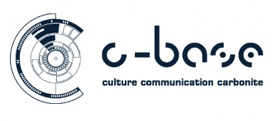

Aaron Swartz Hackathon
Inspired by the work he did and the people he touched, we are organizing recurring hackathons at locations all over the world in memory of Aaron Swartz. The next set will be synchronized on the weekend of November 8-10, 2013. The event will bring together the varied communities that Aaron touched to figure out how the important problems of the world connect, and to share the load of working on those problems.
The November 8-10 hackathon series is being coordinated on this wiki page.
The Berlin Event

We will be kicking off the Berlin Hackathon at 18:00 on Friday 8th November, c-base, Berlin.
Nearest u-bahn station: Jannowitzbrucke (S-Bahn lines S5, S7 and S75 and the U-Bahn line U8). OSM Map: c-base-osm, Google Map: c-base-map
Schedule
- Friday: from 18:00 until 23:55 in the main hall, c-base, Berlin.
Introduction + and open invite / registration to give a quick lightning talk to propose / introduce a project. To give us all plenty of Hacking time... in addition to the first session on the Friday, participants are encouraged to come back and hangout at the c-base over the weekend, hours as follows:
- Saturday: from 11 am till late.
- Sunday: from 11 am till late. Note the final presentations / round-up will be at 12 noon on Sunday.
Projects
Projects for all locations are listed on the Planning wiki , and the ones (that we know about so far) that are specifically happening in Berlin are:
- Mailpile : An experimental indexing and search engine for e-mail. Mailpile is a free-as-in-freedom personal e-mail searching and indexing tool, largely inspired by Google's popular proprietary-but-gratis e-mail service. It wants to eventually become a fast and flexible back-end for awesome personal mail clients, including webmail.
- Project lead : Brennan Novak
- Useful skills : Python, Javascript
- Secure Drop : SecureDrop is an open-source whistleblower submission system managed by Freedom of the Press Foundation that media organizations use to securely accept documents from anonymous sources. It was originally coded by the late Aaron Swartz. More info: https://pressfreedomfoundation.org/securedrop
Source Code
Issue Tracker
- Project lead :
- Useful skills :
- Have a project you'd like to see listed? Fork the code for the page or email samthetechie.
Attending
If you'd like to attend (and we hope you do), you can of course just show up. To be in the loop for updates and with other attendees, please send a listserv request to the Berlin Mailing list.
If you'd like to give a talk, lead a session, be a community lead, or host a project, please send a 150 x 150 pixel image and a tweet-sized summary to samthetechie to be listed on this page, or fork the git and do so for yourself.
Other Logistics
Bring some money for food and coffee. There are places nearby to eat. If you'd like to bring some snacks and drinks to share with the group- great!
Laptops are encouraged for those for whom that is their tool. Pens, paper, soldering irons, knitting needles, and other bits are all highly encouraged. We'll have power to plug yourselves into and wireless.
We want people who express themselves through code, through art, through words, through anything at all. We want to hear your voice, and to add it to the chorus.
Our tag will be #aaronswber